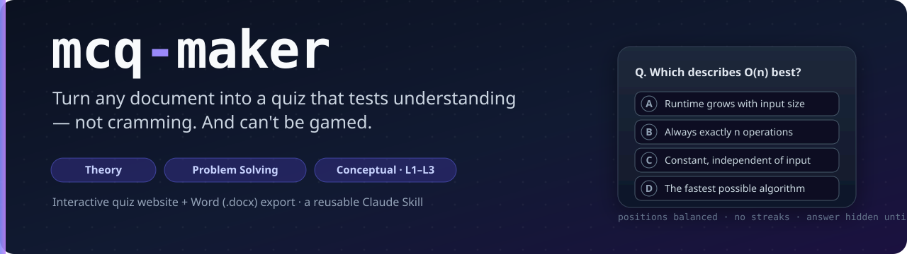

mcq-maker is a reusable Claude Skill. Point it at any document — PDF, slides, lecture notes, a textbook chapter — and it writes a rigorous multiple-choice quiz, then ships it two ways: an interactive quiz website and a Word (.docx) export. The questions test understanding, and the engine makes them impossible to game by answer-position patterns or elimination tricks.
The demo below was generated from a sample “Algorithms & Data Structures” set — try Practice mode for instant feedback.
Definitions and principles, phrased for comprehension — not recognition.
Apply a formula, calculate, trace logic, debug, solve a scenario.
Why / what-if / compare / find-the-flaw — split into 3 Bloom levels, each scored on its own.
Correct positions are randomized and balanced across A/B/C/D with no streak longer than two. The correct option is never longer, marked, or hinted inline, and distractors are built from real misconceptions.
python .claude/skills/mcq-maker/scripts/validate_mcqs.py path/to/questions.json python .claude/skills/mcq-maker/scripts/build_quiz.py path/to/questions.json quiz.html python .claude/skills/mcq-maker/scripts/make_docx.py path/to/questions.json quiz.docx
Inside Claude Code, just ask: “make a quiz from <file>” and the /mcq-maker skill runs the whole pipeline.